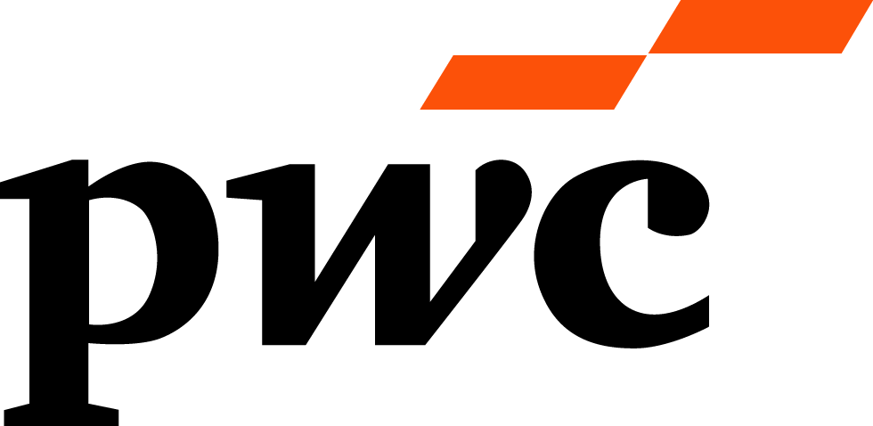
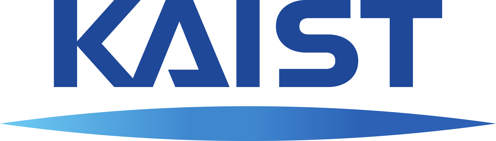

Sora Kimalso Shell
관심이 닿는 것을 배우고,
만들어갑니다.
김소라 Sora Shell Kim
고객과 데이터를 중심으로 일해왔습니다. 웹과 고객 데이터를 분석하고 활용하는 일에서 시작해, CRM과 고객 전략을 거쳐 데이터가 실제 의사결정과 업무에 쓰이는 방식까지 고민해왔습니다.
관심은 점차 데이터 자체에서, 기술이 사람들의 일하는 방식을 어떻게 바꾸는지로 넓어졌습니다. 최근에는 AI와 함께 아이디어를 직접 구현하고 사용해보며, 일하고 만드는 방식의 변화를 직접 경험하고 있습니다.
학부에서는 컴퓨터 정보통신공학을 공부했고, 일에서는 고객과 비즈니스의 문제를 다뤄왔습니다. 지금은 KAIST 정보경영프로그램(IMMS)에서 공부하며, 실무에서 마주한 질문들을 비즈니스와 기술의 관점에서 다시 들여다보고 있습니다.
생각과 경험은 글로도 남깁니다. AROS

PwC 컨설팅
Commercial 본부 컨설턴트

KAIST 정보경영프로그램(IMMS)
재학 중
Projects
일을 벗어나
함께 즐기다 보면,
서로 다른 방식을 발견하게 됩니다.
함께 게임을 하고 편하게 이야기를 나누는 시간을 좋아합니다. 같은 상황에서도 저와 다르게 생각하고 움직이는 사람들을 보며, 새로운 관점을 만나곤 합니다.